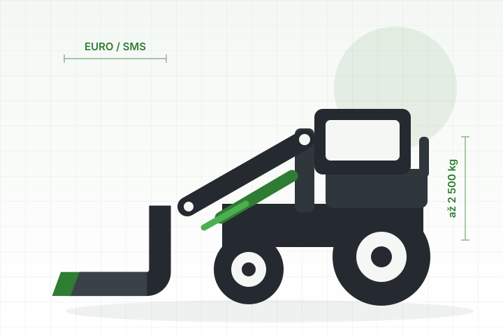

O nás
Adaptéry pro nakladače
a manipulátory
Dodáváme lopaty, vidle, drapáky, kleště i redukční rámy pro čelní nakladače, teleskopické manipulátory a traktory. Skladem i na objednávku.

Náš přístup
Prodáváme jen to, co bychom sami nasadili
Adaptéry nevyrábíme — dovážíme a prodáváme je od výrobců, které máme odzkoušené v reálném provozu. To nám dává volnost doporučit vám model, který na vaši práci opravdu sedí, místo abychom tlačili to jediné, co zrovna máme.
Když v katalogu nic nesedí, zakázkovou výrobu zajistíme u partnerských výrobců. Vy řeknete rozměry a co má adaptér zvládnout, my se postaráme o zbytek.
- 75 adaptérů v nabídce, 37 z nich skladem
- Nezávislí na jednom výrobci — poradíme podle potřeby
- Zakázková výroba u partnerských výrobců
Co dodáváme
Značky v naší nabídce
Nejsme vázaní na jednoho výrobce. Díky tomu můžeme vybírat podle toho, co konkrétní práce potřebuje — a ne podle toho, co zrovna máme na skladě.
InterTech
Základ nabídky — lopaty, vidle, drapáky i redukční rámy pro nakladače a manipulátory.
Hydramet
Kleště na balíky a velkoobjemové lopaty do náročnějšího provozu.
Waw-Pol
Univerzální a velkoobjemové lopaty v šířkách od 1,2 do 2 metrů.
Spaw-met
Lesnické kleště na kulatinu s nezávislými přidržovači.
Roll-Steel
Lopaty s hydraulickým přidržovačem na siláž a objemný materiál.
Metalplast & Agribumper
Nakládací plošiny a traktorové nárazníky.
Časté dotazy
Na co se ptáte nejčastěji
Nejjednodušší je poslat nám fotku čela nakladače z boku a zepředu na e-mail nebo WhatsApp. Systém určíme obratem. Případně stačí typ stroje — u většiny značek víme, co z výroby chodí.
Ano. Buď se dá vyměnit závěsná deska, nebo dodáme redukční rám mezi dvěma systémy. Rám je obvykle levnější a necháte si možnost vrátit se zpět k původnímu stroji. Redukční rámy máme v nabídce na Euro, JCB, Manitou, Merlo i Kramer.
Záruka se řídí podmínkami výrobce daného adaptéru — konkrétní délku vám řekneme u nabídky. Po záruce pomůžeme s opravou a doobjednáme náhradní díly: vidlice, břity, čepy i hydraulické válce.
Menší adaptéry si většinou zákazníci odvezou sami z Telecí. U větších kusů dopravu domluvíme a cenu řekneme dopředu v nabídce.
Určitě — v Telecí máme skladové kusy k vidění. Zavolejte dopředu, ať je na místě někdo, kdo vám poradí.
Přijeďte se podívat
V Telecí u Poličky si adaptéry můžete osahat. Zavolejte dopředu, ať jsme na místě.